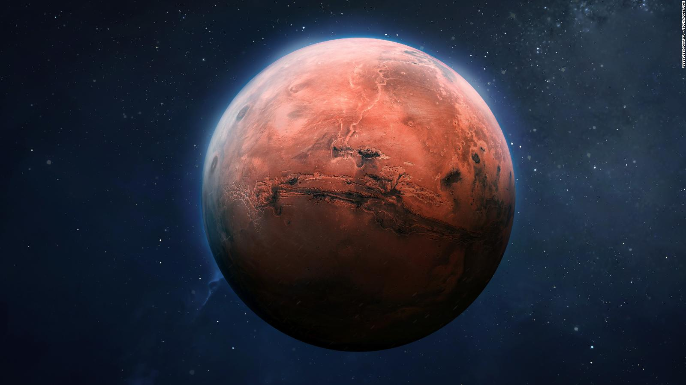

Los científicos esperan que en las próximas décadas se logre una misión tripulada.
Marte es el cuarto planeta del sistema solar y es conocido como el planeta rojo debido a su color característico, causado por el óxido de hierro (Fe2O3) en su superficie.
La distancia promedio entre Marte y el Sol es de aproximadamente 2.28 × 108 km.
Marte tiene dos lunas: Fobos y Deimos. Su gravedad es de aproximadamente 3.71 m/s2.
La atmósfera marciana está compuesta principalmente de CO2 (dióxido de carbono), con trazas de N2 y Ar.
